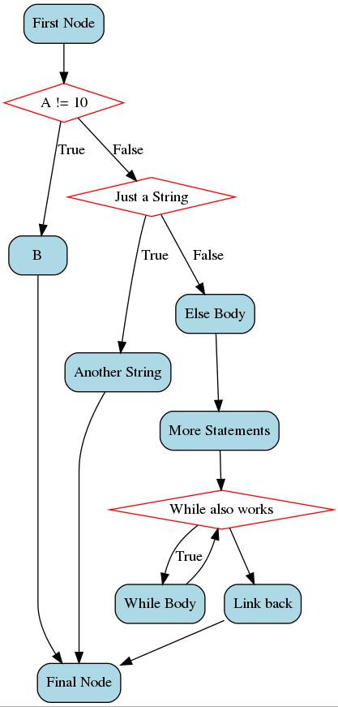

txtoflow (Translate To Flowchart)¶
The Python library can be used to generate flowcharts from pseudo-code.
Installation¶
You may need to install the following graphviz tools and libraries first
On Ubuntu …
sudo apt-get install graphviz libgraphviz-dev pkg-config
Then
pip install txtoflow
Usage¶
from txtoflow import txtoflow
txtoflow.generate(
'''
if (A) {
B;
} else {
C;
D;
while (E) {
F;
}
G;
}
H;
'''
)
Will generate an image named flowchart.jpg in current dir that looks like below
All the conditions and states can be arbitrary strings too
from txtoflow import txtoflow
txtoflow.generate(
'''
First Node;
if (A != 10) {
B;
} else if (Just a String) {
Another String;
} else {
Else Body;
More Statements;
while (While also works) {
While Body;
}
Link back;
}
Final Node;
'''
)
Will still generate image like below
Cmdline usage¶
$ > txtoflow -h
# Generates flowchart of pseudo-code from sample.c in file flow.jpg
$ > txtoflow -s sample.c -o flow.jpg